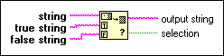

Match True/False String Function
Owning Palette: Additional String VIs and Functions
Requires: Base Development System
Examines the beginning of string to see whether it matches true string or false string. This function returns a Boolean TRUE or FALSE value in selection, depending on whether string matches true string or false string.

 Add to the block diagram Add to the block diagram |
 Find on the palette Find on the palette |